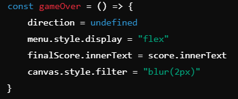

Aprenda como funciona o Snake game, famoso jogo da cobrinha.
Introdução
Esse código implementa um jogo simples de Snake (jogo da cobrinha),
onde você controla uma cobra que se move pelo tabuleiro, coleta
comida, aumenta de tamanho e tenta evitar bater nas paredes ou em si
mesma. Vamos explicar passo a passo como ele funciona:
1. Elementos da Página
O código começa selecionando os elementos HTML da página que serão
usados para mostrar o jogo e controlar suas ações:
canvas: é a área onde o jogo será desenhado, como se fosse uma tela.
O método getContext("2d") obtém o contexto gráfico bidimensional,
que permite desenhar retângulos, linhas, etc.
score: exibe a pontuação atual do jogador.
finalScore: mostra a pontuação final após o jogo terminar.
menu: é o menu que aparece quando o jogo acaba.
buttonPlay: o botão para iniciar ou reiniciar o jogo.
2. Tamanho e Posição Inicial da Cobra
size: define o tamanho dos quadrados no jogo (tanto da cobra quanto
da comida).
initialPosition: define a posição inicial da cabeça da cobra.
snake: é um array que contém as partes da cobra. No começo, a cobra
tem apenas uma parte, que é a sua posição inicial.
3. Funções de apoio
Algumas funções são usadas para ajudar com tarefas comuns no jogo:
incrementScore: aumenta a pontuação quando a cobra come a comida.
randomNumber e randomPosition: geram números aleatórios. A função
randomPosition cria uma posição aleatória para a comida dentro dos
limites do tabuleiro.
randomColor: gera uma cor aleatória para a comida
4. Comida
A comida tem uma posição aleatória no tabuleiro e uma cor aleatória.
5. Desenho no canvas
drawFood: desenha a comida na tela usando a cor e posição
aleatórias.
drawSnake: desenha a cobra, representada por uma série de
retângulos. A cor da cabeça da cobra é branca, e o resto é cinza.
6. Movimentação da cobra
A cobra se move adicionando um novo quadrado à frente da sua cabeça,
baseado na direção escolhida
vai se mover para a direita(right) quando apertar a setinha da
direita.
vai se mover para a esquerda(left) quando apertar a setinha da
esquerda.
vai se mover para baixo(down) quando apertar a setinha de baixo
vai se mover para cima(up) quando apertar a setinha de cima
A função snake.push adiciona uma nova posição no final da cobra, e
snake.shift remove a última parte para manter o tamanho constante (a
menos que tenha comido comida).
7. Desenhando o grid
Essa função desenha um grid (grade) no fundo do canvas para facilitar
a visualização da movimentação da cobra e da comida.
8. Verificar se a cobra comeu a comida
A função verifica se a cabeça da cobra está na mesma posição da
comida. Se sim, a pontuação aumenta, a cobra cresce, e a comida é
reposicionada aleatoriamente.
9. Verificar colisões
Verifica se a cobra bateu nas paredes ou em si mesma. Se acontecer, o
jogo acaba.
10. Fim de jogo

Quando o jogo acaba, o menu aparece, o placar final é exibido, e a
tela do jogo fica desfocada.
11. Loop do Jogo
A cada ciclo (ou "frame") do jogo, a tela é limpa e a cobra, comida e
grid são redesenhados. A cobra se move, verifica se comeu comida e se
colidiu com algo. O ciclo se repete a cada 300 milissegundos.
12. Controle e Reinicio
As setas direcionais controlam a direção da cobra, mas ela não pode
mudar para a direção oposta imediatamente. javascript
Quando o botão de "jogar" é pressionado, o placar é resetado, o menu
desaparece, e a cobra volta à posição inicial.
Home
Jogar